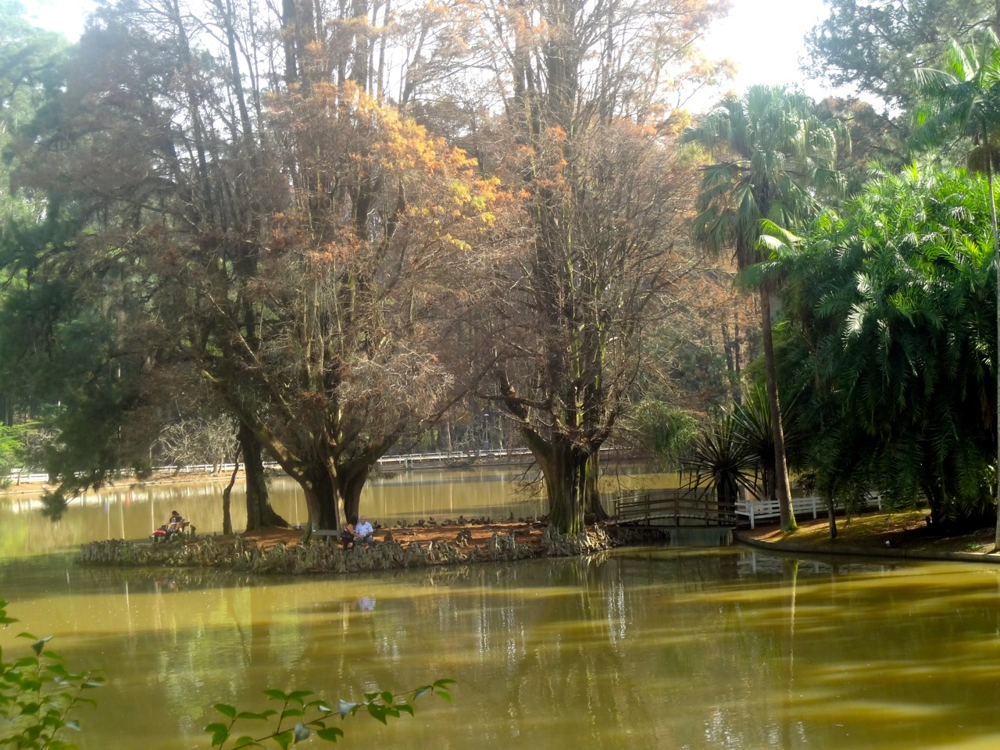
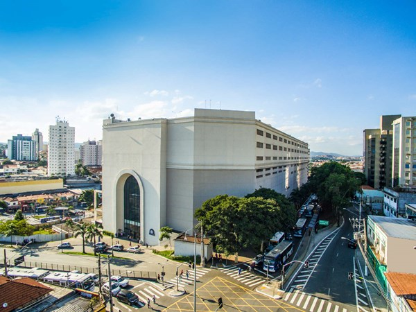

Museu de arte mais antigo da cidade, fundado em 1905 pelo Governo do Estado de São Paulo, vem realizando mostras de sua renomada coleção de arte brasileira e exposições temporárias de artistas nacionais e internacionais.
Site

O Parque Estadual Alberto Löfgren, conhecido como Horto Florestal, é um importante parque de lazer e cultura localizado na zona norte da cidade de São Paulo a cerca de 15 quilômetros do centro do município, próximo também ao Parque Estadual da Cantareira
Site

O empreendimento tem uma localização estratégica na Zona Norte, ponto de congruência de pessoas de diversas regiões, que utilizam o terminal de ônibus urbano e intermunicipal e a estação de metrô como transporte diário, por onde circulam cerca de 1.2 milhão de usuários/ mês.
Site- Pinacoteca
- Ponte Estaiada
- Praça e Catedral da Sé
- Parque Estadual Alberto Löfgren - Horto Floresta
- Parque do Ibirapuera
- Shopping Metrô Tucuruvi
- Teatro Municipal de São Paulo
- Aquário de São Paulo